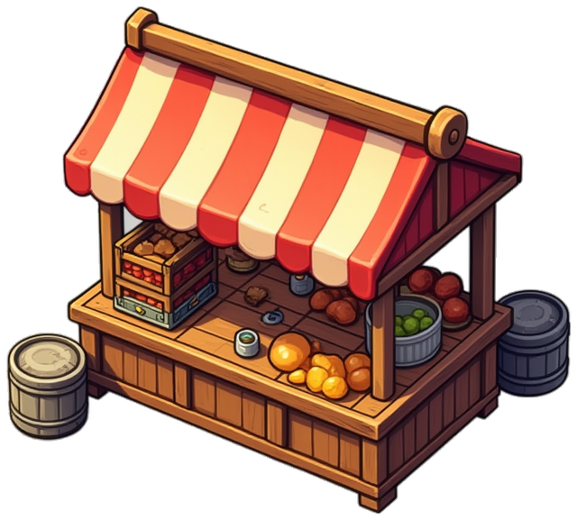
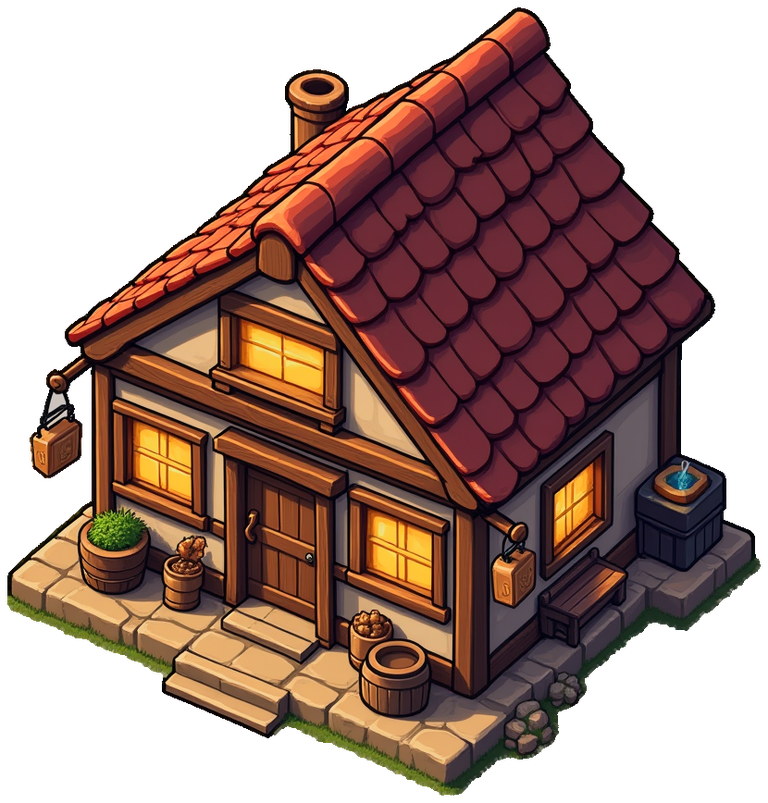
Мир играет сам
Вышел из игры — мир остался. NPC лезут в данжи, возят товар, торгуются и пьют в таверне. Ты приходишь не на пустую карту.
Ты убивал их сотнями. Теперь они пришли за тобой.
Качаешь то, чем играешь. Смерть уносит вещи. Мир живёт без тебя. Доната нет.


Вышел из игры — мир остался. NPC лезут в данжи, возят товар, торгуются и пьют в таверне. Ты приходишь не на пустую карту.
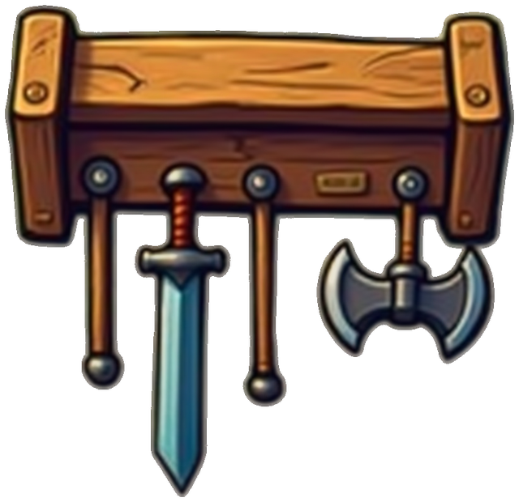
Уровня нет. Машешь мечом — растёт меч, лезешь по замкам — растёт взлом. Нужен другой персонаж — играй по-другому, а не создавай нового.
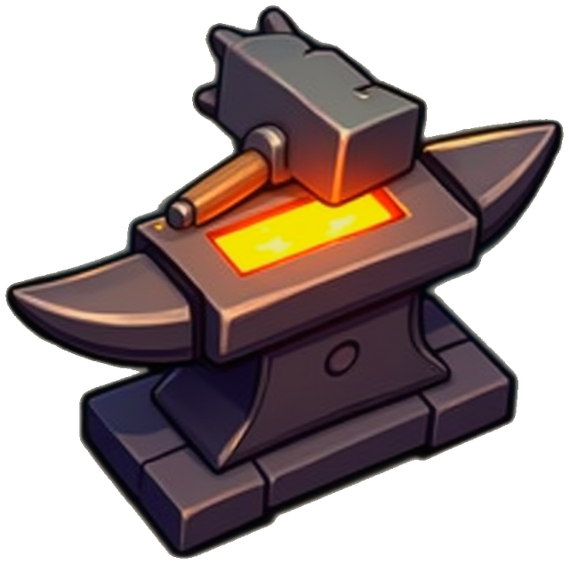
Всё стоящее делают игроки у наковальни. Кузнеца с именем знают на весь шард. Из меню не падает ничего.
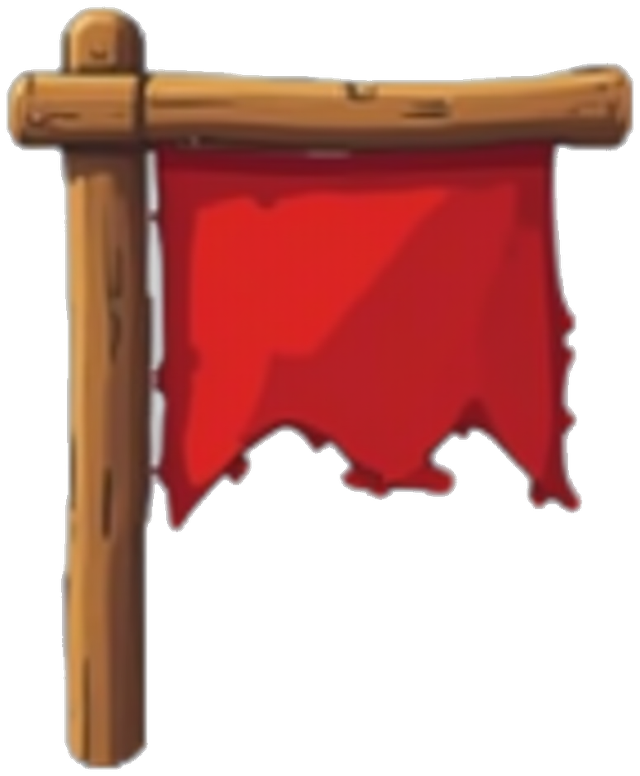
С одного удара не убивают. Успеешь развернуться, позвать своих или уйти ногами. Кто победил — тот дожал, а не прокнул.
Руду, дерево, траву и рыбу кто-то вытащил руками. Жилы кончаются, лучшее лежит там, где убивают. Сколько дотащил — столько и твоё.
Некромантию не учат живые. Умри, сядь духом на корабль мёртвых — и вернись другим.
Убил при свидетелях — родня запомнила. Мститель найдёт тебя хоть на другом конце карты. Работай чисто.
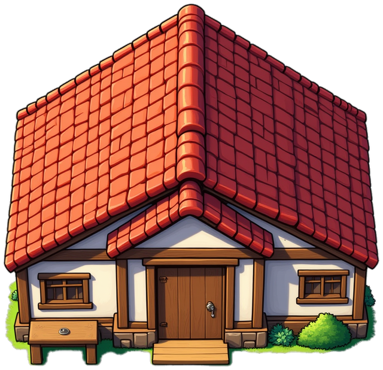
Займи свободный клочок земли и строй слоями: фундамент, стены, дверь, крыша. В сундуках — всё нажитое. Ночью монстры проверят стены на прочность.
Играй за людей за стеной или за тех, кто ломится снаружи. Обе стороны живые, у обеих свой дом.
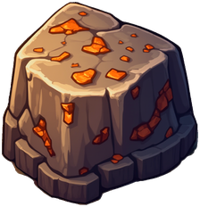
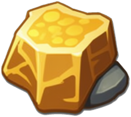
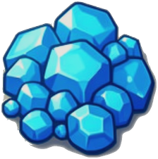
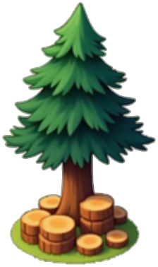
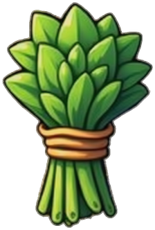
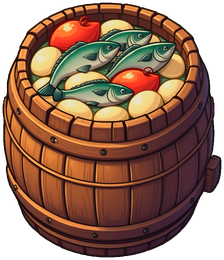
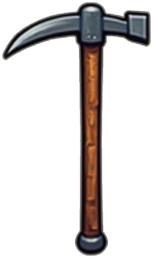
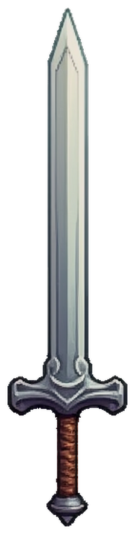
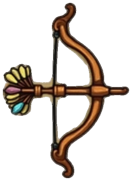
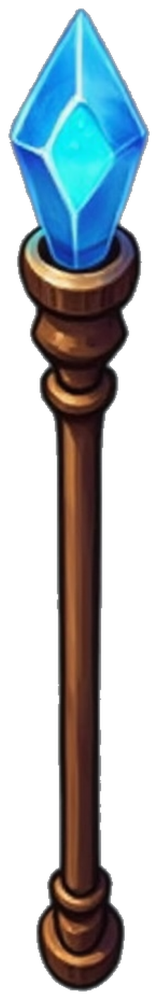
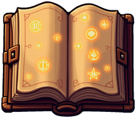
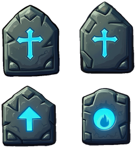
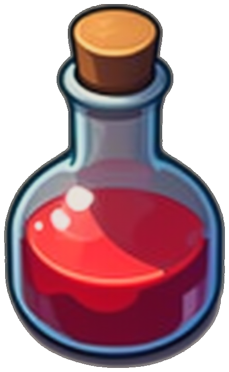
Игра в ранней разработке. Всё, что видишь, ещё поменяется.